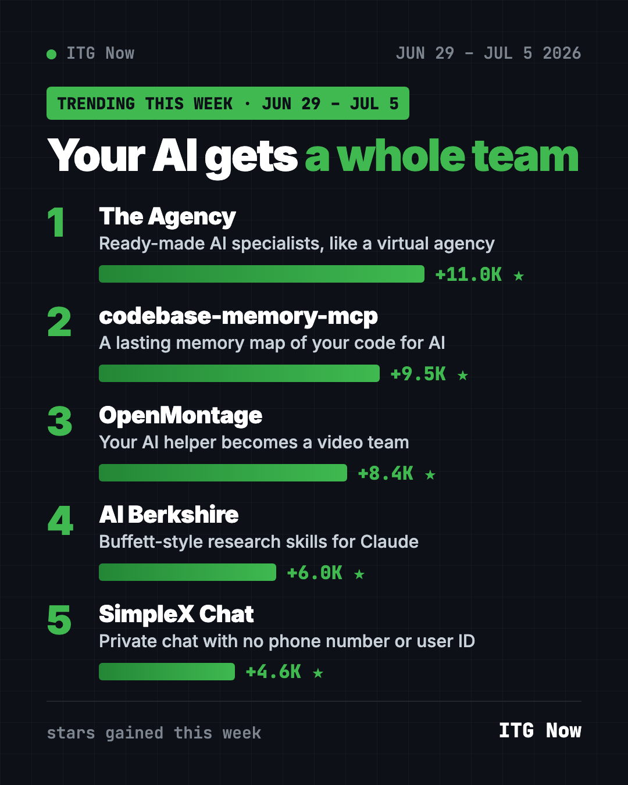
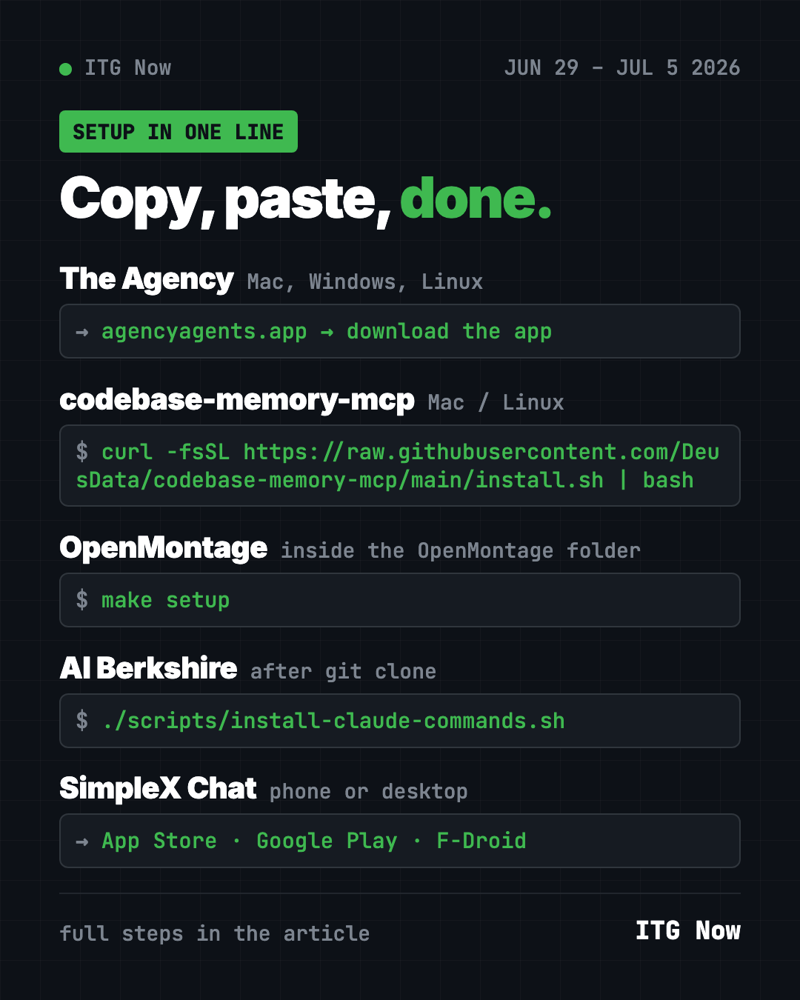

Home › Tools and repos › GitHub trending this week
Best GitHub Repos the Week of June 29, 2026
- Published 15 Oct 2026
- Updated 16 Oct 2026
- 6 min read
- By the ITG Now team
In this guide (9)
The best GitHub repos the week of June 29, 2026 put a whole team of AI specialists in first place. The Agency gained 11,000 stars, ahead of codebase-memory-mcp, OpenMontage, AI Berkshire and the private messenger SimpleX Chat.
It's a mixed bag this time. You get AI "employees," a video maker, an investing research kit, and a chat app that doesn't even ask for your phone number. All five are free to use.
Key takeaways
- The Agency gives your AI helper ready-made roles, like a designer, a marketer or a code reviewer.
- codebase-memory-mcp made its third straight week, with +9.5K stars.
- OpenMontage stayed hot after leading the week before.
- AI Berkshire turns Claude Code or Codex into a value-investing research desk. It's not financial advice.
- SimpleX Chat is a private messenger with no user IDs of any kind.

This week's lineup compared
| Repo | Think of it as | Good for | Stars this week | Platforms |
|---|---|---|---|---|
| The Agency | A staff of AI specialists | Solo founders, small teams | +11.0K | Mac, Windows, Linux app |
| codebase-memory-mcp | A memory for your code | Developers | +9.5K | Mac, Windows, Linux |
| OpenMontage | An AI video crew | Creators | +8.4K | Mac, Windows, Linux |
| AI Berkshire | A stock research desk | Long-term investors | +6.0K | Claude Code or Codex |
| SimpleX Chat | A messenger without IDs | Privacy fans | +4.6K | iOS, Android, desktop |
Star gains are for June 29 to July 5 only. Totals were checked on October 16, 2026.
1. The Agency: hire a team of AI specialists
Stars: +11.0K this week · about 160.3K total
What it is: A free collection of AI agent "personalities," each an expert in one area. There are divisions like engineering, design, marketing and security. The README says it started from a Reddit thread. You load an agent into your AI helper, and it takes on that role.
Who it's for: Solo business owners who wear every hat and want a specialist on call.
Everyday use: Ask the marketing agent for a launch plan for your new product.
Install it. The easiest way is the Agency Agents app for Mac, Windows and Linux at agencyagents.app. It installs agents into Claude Code, Cursor, Codex and Gemini with a click. On a Mac with Homebrew, copy and paste this:
brew install --cask msitarzewski/agency-agents/agency-agents
Or ask your AI helper:
Install The Agency from github.com/msitarzewski/agency-agents into Claude Code, only the marketing and design divisions.
2. codebase-memory-mcp: three weeks and counting
Stars: +9.5K this week · about 46.7K total
What it is: A local tool that builds a lasting map of your code for AI helpers. It runs on your own computer.
Everyday use: Ask your AI what a change will affect, before you make it.
Install it on Mac or Linux. Copy and paste this:
curl -fsSL https://raw.githubusercontent.com/DeusData/codebase-memory-mcp/main/install.sh | bash
Or ask your AI helper:
Install codebase-memory-mcp from github.com/DeusData/codebase-memory-mcp and tell me which parts of this project are most connected.
See codebase-memory-mcp on GitHub
3. OpenMontage: your AI video crew
Stars: +8.4K this week · about 68.5K total
What it is: A free system that lets your AI coding helper research, script, narrate, edit and render videos.
Everyday use: Turn your blog post into a narrated video with captions.
Install it. Copy and paste this:
git clone https://github.com/calesthio/OpenMontage.git
cd OpenMontage
make setup
Or ask your AI helper:
Use OpenMontage from github.com/calesthio/OpenMontage to turn this article into a 60-second narrated video with captions.
See OpenMontage on GitHub · Read our full guide

4. AI Berkshire: value-investing research with AI
Stars: +6.0K this week · about 16.8K total
What it is: A set of skills for Claude Code and Codex built on the methods of four value investors: Warren Buffett, Charlie Munger, Duan Yongping and Li Lu. Several AI agents research a company in parallel, then the kit writes a report with a clear verdict. The README is in Chinese, with English and Japanese versions linked.
Who it's for: Long-term investors who already do their own homework and want a second pair of eyes.
Everyday use: Ask for a deep dive on one company's business before you read its annual report.
Install it for Claude Code on Mac or Linux. Copy and paste this:
git clone https://github.com/xbtlin/ai-berkshire.git
cd ai-berkshire
./scripts/install-claude-commands.sh
Or ask your AI helper:
Install AI Berkshire from github.com/xbtlin/ai-berkshire for Claude Code and explain, in English, what each command does.
⚠️ Heads up: This is a research tool, not advice. The author's own disclaimer says past returns don't predict future ones. Treat any price range it gives as an opinion.
5. SimpleX Chat: messaging with no phone number
Stars: +4.6K this week · about 19.6K total
What it is: A free, open-source messenger. Unlike most chat apps, it has no user IDs at all, not even a phone number or username. Messages are end-to-end encrypted, and the README says it also protects who you talk to and when.
Who it's for: Journalists, activists, or anyone who wants more privacy than usual apps give.
Everyday use: Share an invite link with a friend and chat without trading phone numbers.
Install it. Get the app from the App Store, Google Play or F-Droid. There's also a desktop app on the project's Releases page.
Or ask your AI helper:
Explain how SimpleX Chat from github.com/simplex-chat/simplex-chat keeps my contacts private, in plain words.
Which one should you try first?
- Running a one-person business: The Agency.
- Making content: OpenMontage.
- Investing for the long term: AI Berkshire, as a study aid.
- Want a private chat app today: SimpleX Chat. It's a normal phone app.
- Coding with AI on a big project: codebase-memory-mcp.
Catch up on the month with the top GitHub repos of June 2026 and June 2026 in AI news. Then see the week of July 6.
FAQ
What were the best GitHub repos the week of June 29, 2026?
The Agency led with about 11,000 new stars. codebase-memory-mcp, OpenMontage, AI Berkshire and SimpleX Chat followed.
Is SimpleX Chat really free?
Yes. It's free and open source under the AGPL-3.0 license, on iOS, Android and desktop.
Can AI Berkshire tell me which stocks to buy?
It gives AI-written research with a verdict, but it's not financial advice. Always make your own decision, and consider a licensed advisor.
Do I need to code to use The Agency?
No. The desktop app installs agents into your AI helper with a click. You then just talk to them.
Keep reading

Trending GitHub Repos October 2026: The Top 5 So Far
The trending GitHub repos of October 2026 so far: a free Photoshop-style editor, an AI art studio, a big AI model for gaming PCs and more, explained.

Trending GitHub Repos This Week, Oct 5 2026: The Top 5
Trending GitHub repos this week Oct 5 2026: Matt Pocock's skills, the openGym workout tracker, e2e testing, HyperFrames video and claude-mem memory.

GitHub Trending September 28, 2026: Hindsight and Paperclip
GitHub trending September 28 2026: Hindsight, Paperclip, NVIDIA's OpenShell and a free 542-lesson AI course, with setup steps for each.